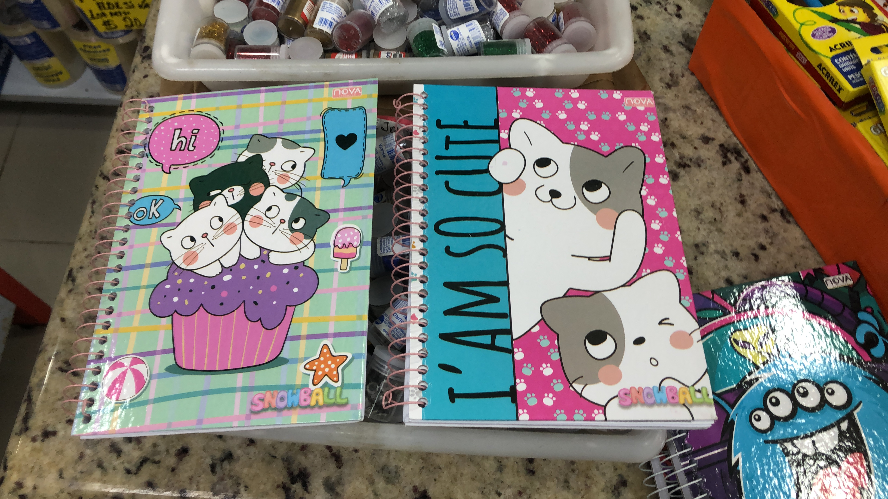
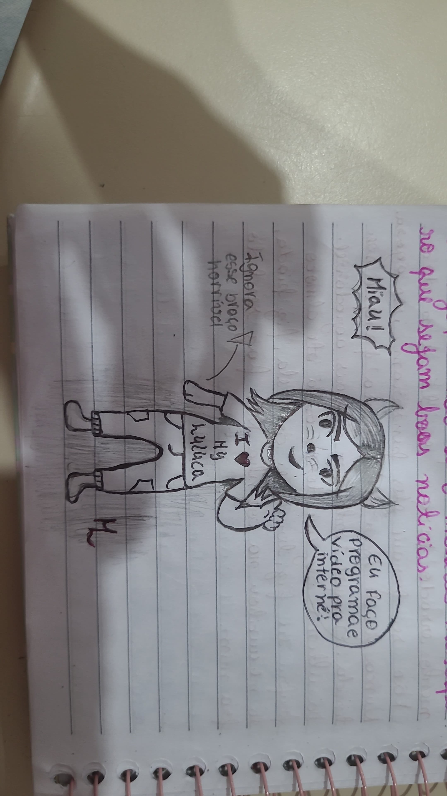
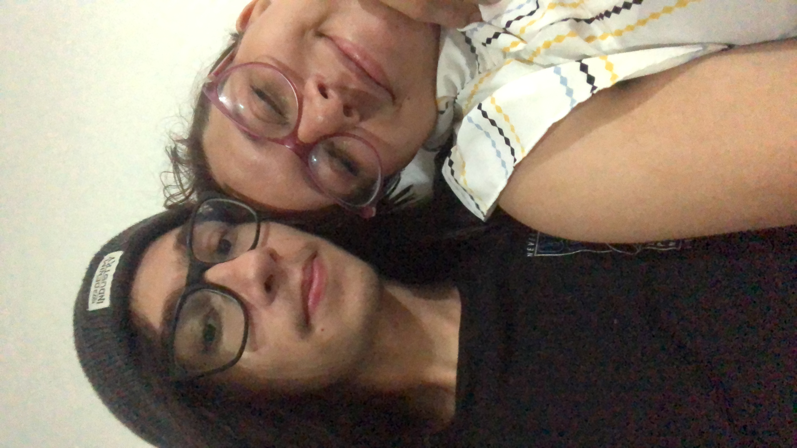

Bizarro quando paro para pensar que ja se passou mais 1 ano desde que estamos namorando, sempre vou me lembrar da primeira call, a primeira vez que nos vimos no parque, aquele pedido de namoro bobo que eu jurava que você não iria aceitar, conhecer seus pais, primeira vez que dormimos um na casa do outro, enfim eu amo tudo isso, todos momentos que ja tivemos juntos em um curto espaço de tempo.
Nesse meio tempo fizemos muitas coisas juntos e sinto que evoluimos muito individualmente e como casal, lembra que no inicio você tinha problemas em demonstrar o que sentia? Justamente por isso dei a ideia dos diarinhos que atualmente esta na sua terceira edição:

Não sei se foi os diarios mas pouco tempo depois você melhorou muito nesse aspecto, se tornou mais transparente, aprendeu a desabafar comigo e demonstrar mais o que você sentia. Hoje em dia depois de conhecer mais consigo entender sua insegurança, recentemente você desabafou comigo sobre suas amizades durante esses anos de colegio e ate sobre sua "Su-min" (Acho que o nome era yasmim? a que te fazia sentar no sol), ouvindo seu desabafo so me fez ter mais certeza do quanto quero te proteger desse mundo e dessas pessoas ruins, você é muito boa para sofrer por outras pessoas
Durante esse tempo de relacionamento eu passei cada vez mais a te admirar, por mais que você negue você é uma pessoa incrivel, esforçada e inteligente. Como sou completamente bobinho por ti descidi listar algumas das coisas que mais admiro em você meu amorzinho:
Exforço:
Acho que ja falei isso varias vezes, mas eu acho você extremamente exforçada em tudo que você se propoe em fazer, ainda mais sabendo a rotina que você leva. Você é muito exforçada no seu trabalho não é atoa que você sempre é vista como uma excelente profissional e eu não consigo ver você não se destacando, você tem uma resiliencia muito grande por ter varios problemas pessoais e ainda assim conseguir manter tudo funcionando na sua vida. Sei que muito disso é por necessidade e não escolha, mas não seria todo mundo que mesmo com as mesmas necessidades teria essa força que você tem.
Criatividade:
Eu te acho uma pessoa extremamente criativa e artisticamente falando acho que você tem um potencial gigantesco, seja com maquiagens, desenhos ou o que quer que você se proponha a fazer eu realmente acho muito bom, acho que as vezes você deve achar que falo so para te agradar, mas eu realmente amo demais. Hoje você fez esse desenhinho para mim e eu simplesmente to bobinho apaixonado e olhando toda hora:  juro que se minha galeria não tivesse 18k de fotos eu iria fazer uma galeria so de coisinhas artisticas que você ja fez (Eu Fiz).
Humor:
Seu senso de humor foi algo que sem duvidas me fez me apaixonar por você, inicialmente eu te achava toda certinha, mas com o passar do nosso relacionamento você demonstrou ter o humor tão caotico e quebrado quanto o meu. Eu tinha muito medo de você ser uma Pamela 2 que me censurava em tudo que eu falava e acabou que você é tão louca quanto eu :3.
Seu amor:
Não sei exatamente se vou conseguir explicar esse ponto, mas seu amor pelas coisas ao seu redor seja eu, o ajato, sua mãe, as musicas enfim a forma que você demonstra seu amor por tudo que você realmente ama e tem como importante é a coisa mais linda de se ver no mundo.
Você não so demonstra como faz a gente se sentir realmente muito especial e saber o quão importante somos na sua vida, eu como uma pessoa que ja tive muitas inseguranças em relacionamentos me encontro pela primeira vez confortavel nesse quesito, sempre me sinto muito amado por ti.

{kind=link}
Existem muito mais coisas que me admiram em você e para falar a verdade quanto mais o tempo passa mais eu acho motivos para isso. Sou muito feliz de ter uma pessoa tão incrivel e que me faz tão bem ao meu lado, sou eternamente grato por ter você na minha vida Maria Luíza Fiuza Pereira, e eu não vejo a hora de me casar com você.